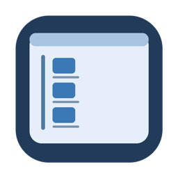

↤
Automatic alignment
New desktop icons move to your preferred edge without manual dragging.

LeftDeskScreenshots, files, folders and drives — automatically aligned where you want them. Built for ultrawide screens. Useful on any Mac.
↓ Download for MacNew desktop icons move to your preferred edge without manual dragging.
Align all icons into a compact grid while retaining their relative order.
Pause alignment, set spacing and margins, choose a direction or launch at login.
Download LeftDesk and drag the app into Applications.
Open LeftDesk. If macOS blocks it, see the first-launch instructions below, then allow Finder automation when prompted.
Set desktop Sort By to None, turn off Use Stacks and choose your alignment in the menu bar.
LeftDesk is free, ad-hoc signed and not notarized by Apple. If macOS blocks the first launch, open System Settings → Privacy & Security, find the blocked app message, and select Open Anyway if you trust the download. Confirm the prompt. On managed Macs this option may be unavailable. Never disable Gatekeeper globally.
LeftDesk operates on your Mac. It has no built-in analytics or telemetry. Update checks contact this website only when requested or when you opt in to checks at launch; they do not upload desktop information. Standard server logs may record IP addresses and request metadata. It reads desktop icon names and positions through Finder to organize their layout; it does not upload that information or read your file contents. macOS may retain local diagnostic logs. The About link and update download action open your browser only when clicked.
Finder manages desktop icon positions. LeftDesk uses macOS Automation to read and update them. If access is denied, enable Finder under System Settings → Privacy & Security → Automation.
Finder creates the icon first. LeftDesk reacts as soon as it can, so a brief transition may still be visible.
LeftDesk targets the primary display. Multi-display placement is not yet supported.
Disable Launch at Login in the menu, quit LeftDesk, then move the app from Applications to the Trash. Your files remain where they are.
Website privacy: this page includes no analytics scripts, external fonts or tracking cookies. Standard hosting access logs may be retained by the hosting provider.
LeftDesk is free to use. If it makes your day a little easier, share it with another Mac user.
Give your desktop a new starting point.